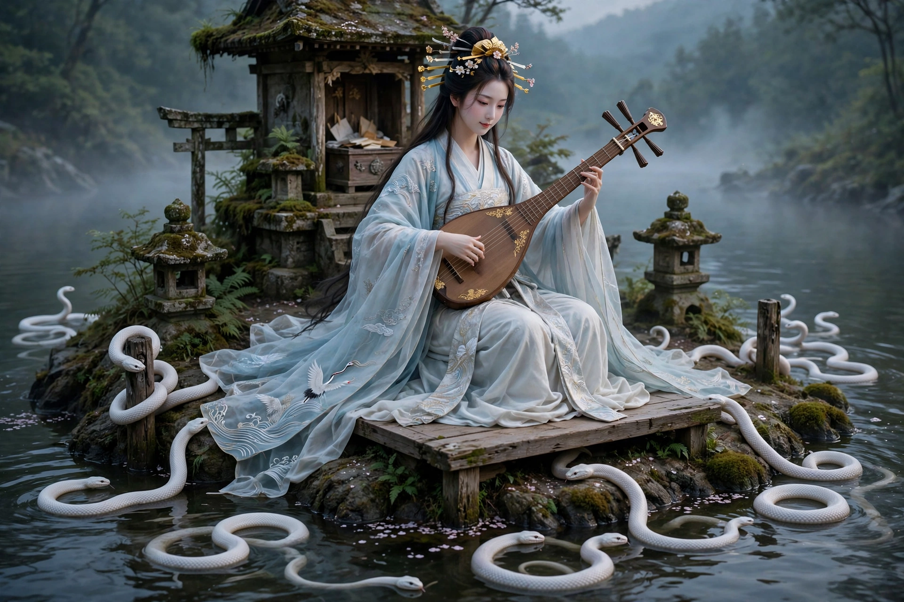

From Wikipedia, the free encyclopedia
| Benzaiten | |
|---|---|
| Affiliation | Shinto and Japanese Buddhism; goddess of water, music, learning and fortune |
| Origin | The Indian goddess Saraswati, transmitted via Buddhism |
| Attribute | The biwa (lute) |
| Sacred sites | Enoshima; Itsukushima; Chikubu Island (three great Benzaiten shrines) |
| Group | One of the Seven Lucky Gods |

Benzaiten (Japanese: 弁才天) is the Japanese goddess of everything that flows — water, music, eloquence, learning and wealth — derived from the Indian goddess Saraswati and carried to Japan with Buddhism, where she took her place both in the Buddhist pantheon and among the kami of Shinto. She is the only female among Japan's Seven Lucky Gods, depicted as a beautiful woman in flowing robes playing the biwa, often enthroned on an island or by the sea, attended by white snakes — her messengers, sacred at her island shrines of Enoshima, Itsukushima and Chikubu.
In the Sutra of Golden Light, Saraswati promises to protect the sutra's devotees; in China she became a goddess of eloquence and music, and in Japan her waters widened: rivers, lakes and the sea are hers, and with water came fertility, fortune and the dragon/snake powers of the deep. Medieval Japan made her patroness of musicians and performers — the biwa-playing priests who sang the Tale of the Heike were her devotees — and of the geisha's arts; shrines placed her on islands in ponds in gardens and castle grounds, where her music is still offered.
At Enoshima, legend tells how Benzaiten caused the island to rise from the sea in 552 and subdued the five-headed dragon that plagued the coast — he reformed, became her devotee, and survives as the hill Ryūko ("dragon in love"). Itsukushima's shrine, built over the water for her by the Heike clan, is among Japan's most famous sacred sites. Her snakes tie her to the Ugajin, the snake-bodied fortune god with whom she is sometimes fused — wealth, water and music in one gracious, slightly uncanny figure.
Shinto · Buddhism · Saraswati · Lakshmi · Japanese mythology